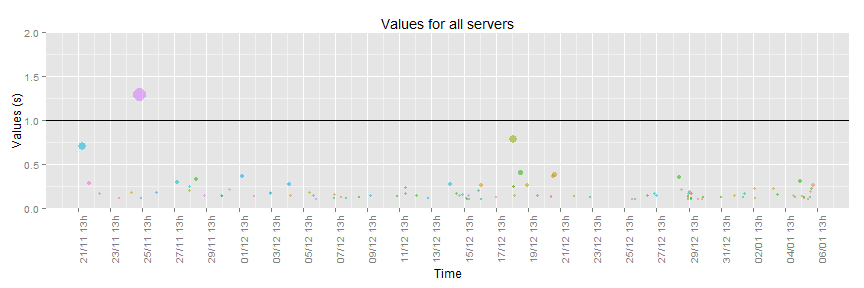
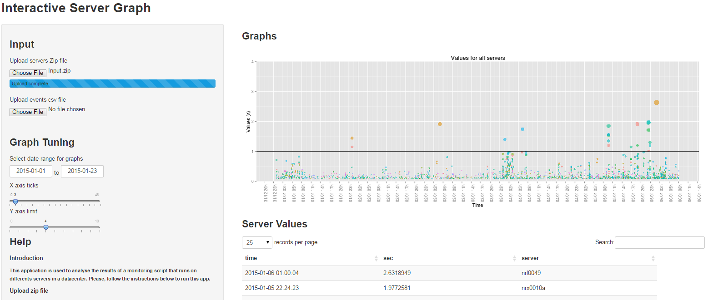

This application is used to analyze the results of a monitoring script that runs on different servers in a datacenter. You can find it here: http://coursera1.shinyapps.io/DDP-shiny.
The monitored values are plotted on the Y axis and colored by server names. The size of the dots are proportional to the values to make them more visible for the analysis.
You can play around with the graph tuning parameters:
The complete code can be found here: http://github.com/coursera1/DDP-shiny/blob/master/ui.R
Here are the descriptions of the inputs and outputs:
fileInput("serverZip", "Upload servers Zip file", multiple=FALSE, accept="application/zip"),
fileInput("eventsCsv", "Upload events csv file", multiple=FALSE, accept="text/csv"),
dateRangeInput("dateRange", "Select date range for graphs", start="2014-11-01"),
sliderInput("breaks", "X axis ticks", 0, 48, 6, 3, round=TRUE),
sliderInput("yLimit", "Y axis limit", 0, 10, 4, 1, round=TRUE)),
...
plotOutput("G1"),
h3("Server Values"),
dataTableOutput("serverValue"),
h3("Events"),
dataTableOutput("tEvents")
The complete code can be found here: http://github.com/coursera1/DDP-shiny/blob/master/server.R
Here is the main plotting code:
qplot(time, sec, data=fData, col=server, geom="point", alpha=0.7, size=sec,
main="Values for all servers", xlab="Time", ylab="Value (s)") +
scale_x_datetime( breaks=xBr, labels = date_format("%d/%m %Hh")) +
geom_hline(yintercept=1) +
geom_vline(xintercept=as.numeric(fEvents$time)) +
theme(axis.text.x = element_text(angle = 90, hjust = 1)) +
coord_cartesian(ylim = c(0, input$yLimit)) +
theme(legend.position = "none")
This is an example of a generated graph for some sample data:
qplot(time, sec, data=ndat, col=server, geom="point", alpha=0.7, size=sec,
main="Values for all servers", xlab="Time", ylab="Values (s)") +
scale_x_datetime( breaks="48 hour", labels = date_format("%d/%m %Hh")) +
geom_hline(yintercept=1) +
theme(axis.text.x = element_text(angle = 90, hjust = 1)) +
coord_cartesian(ylim = c(0, 2)) +
theme(legend.position = "none")

